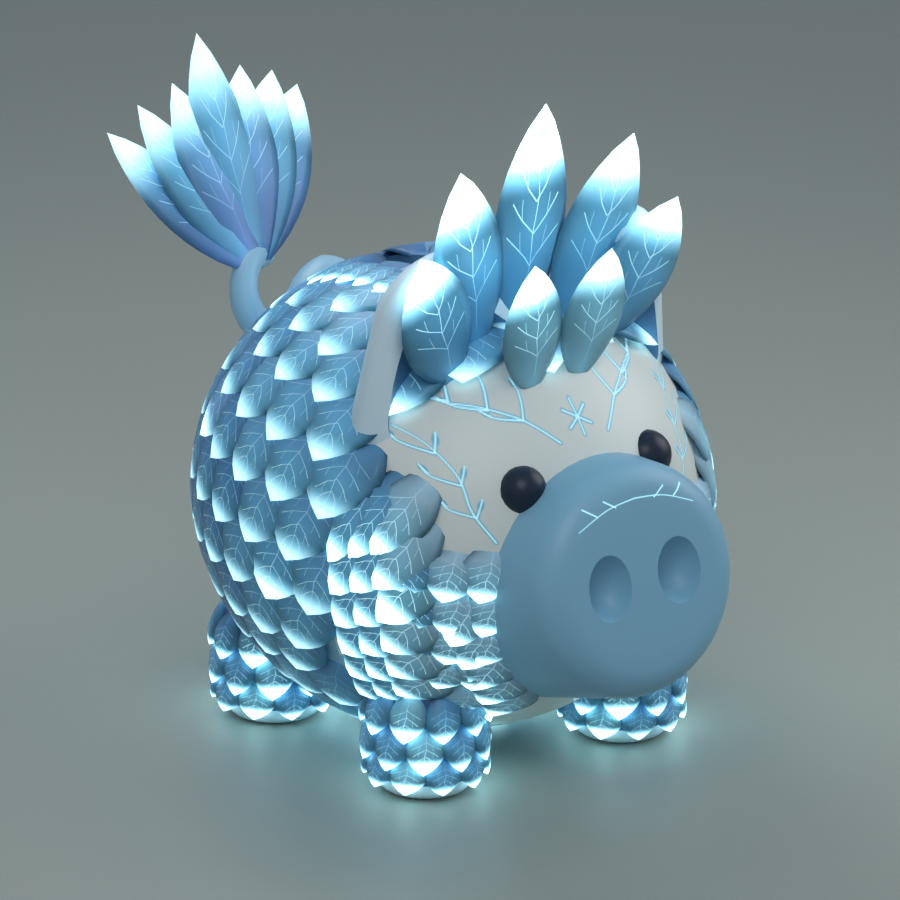
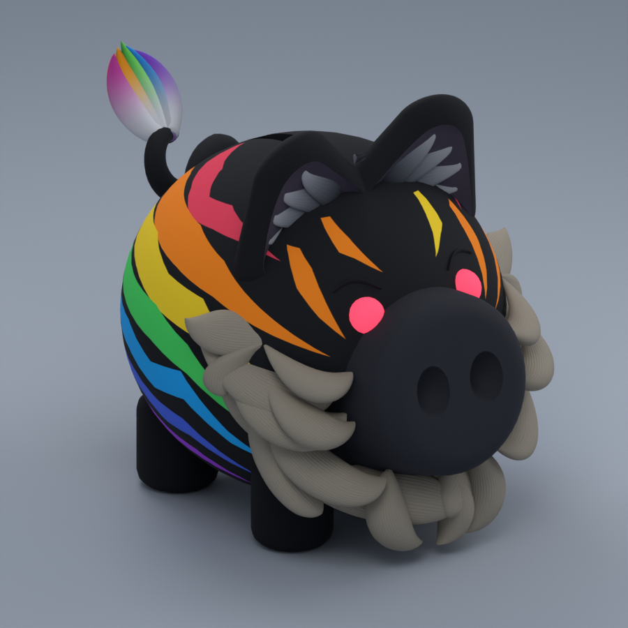

ROB A PIGGY BANK · LEGENDARY SKINS
Legendary piggies.
Storm Wolf: a flush vault opening, a low centered tail, continuous mane, and chunky branching lightning and glowing body markings that pulse with each strike.
Legendary model packages for review. Studio integration remains pending.

Dragon
Raised scales, scalloped wings and breathing ember seams across the coat.

Ice Phoenix
Layered ice-blue feathers, glowing cyan tips and a gentle frost shimmer.

Rainbow Tiger
Option C: full layered textured beard, relaxed brows, wraparound rainbow stripes and four-second animation.